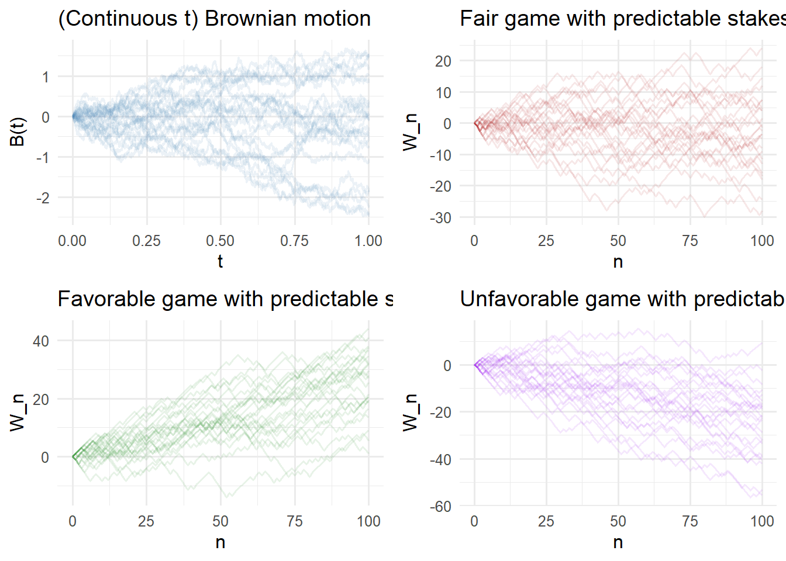

# Fully updated script: plots + total variation, quadratic variation, and covariation
suppressPackageStartupMessages({
library(tidyverse)
library(cowplot)
})Warning: package 'cowplot' was built under R version 4.4.3make_martingale_plots <- function(
n_paths = 250,
nW = 100,
nB = 4000,
T = 1,
alpha_val = 0.01,
cols = c(bm = "steelblue", mart = "firebrick", sub = "forestgreen", super = "purple"),
seed = 489
) {
stopifnot(length(cols) == 4)
set.seed(seed)
# ---- Brownian motion: n_paths on [0, T] ----
dt <- T / nB
bm_df <- purrr::map_dfr(1:n_paths, function(p) {
dB <- rnorm(nB, mean = 0, sd = sqrt(dt))
tibble(
path = factor(p),
t = seq(0, T, length.out = nB + 1),
B = c(0, cumsum(dB))
)
})
p_bm <- ggplot(bm_df, aes(x = t, y = B, group = path)) +
geom_line(alpha = alpha_val, linewidth = 0.6, color = cols[["bm"]]) +
labs(title = "(Continuous t) Brownian motion", x = "t", y = "B(t)") +
theme_minimal(base_size = 12) +
theme(legend.position = "none")
# ---- Wealth simulator (discrete time) ----
simulate_wealth <- function(p, nW, n_paths) {
purrr::map_dfr(1:n_paths, function(path_id) {
X <- ifelse(rbinom(nW, 1, p) == 1, 1, -1) # ±1
H <- numeric(nW); H[1] <- 1
for (k in 2:nW) H[k] <- 1 + 0.5 * (X[k-1] < 0) # predictable stakes
tibble(path = factor(path_id), n = 0:nW, W = c(0, cumsum(H * X)))
})
}
wealth_mart_df <- simulate_wealth(p = 0.5, nW = nW, n_paths = n_paths)
wealth_sub_df <- simulate_wealth(p = 0.6, nW = nW, n_paths = n_paths)
wealth_super_df <- simulate_wealth(p = 0.4, nW = nW, n_paths = n_paths)
p_mart <- ggplot(wealth_mart_df, aes(x = n, y = W, group = path)) +
geom_line(alpha = alpha_val, linewidth = 0.6, color = cols[["mart"]]) +
labs(title = "Fair game with predictable stakes, Wealth (p = 0.5)", x = "n", y = "W_n") +
theme_minimal(base_size = 12) +
theme(legend.position = "none")
p_sub <- ggplot(wealth_sub_df, aes(x = n, y = W, group = path)) +
geom_line(alpha = alpha_val, linewidth = 0.6, color = cols[["sub"]]) +
labs(title = "Favorable game with predictable stakes, Wealth (p = 0.6)", x = "n", y = "W_n") +
theme_minimal(base_size = 12) +
theme(legend.position = "none")
p_super <- ggplot(wealth_super_df, aes(x = n, y = W, group = path)) +
geom_line(alpha = alpha_val, linewidth = 0.6, color = cols[["super"]]) +
labs(title = "Unfavorable game with predictable stakes, Wealth (p = 0.4)", x = "n", y = "W_n") +
theme_minimal(base_size = 12) +
theme(legend.position = "none")
combo <- cowplot::plot_grid(p_bm, p_mart, p_sub, p_super, ncol = 2)
list(
data = list(
brownian = bm_df,
martingale = wealth_mart_df,
submartingale = wealth_sub_df,
supermartingale = wealth_super_df
),
plots = list(
brownian = p_bm,
martingale = p_mart,
submartingale = p_sub,
supermartingale = p_super,
combo = combo
)
)
}
# ---- TV, QV, and QCov calculations ------------------------------------------
# Cross quadratic covariation for two aligned series (same index)
path_qcov <- function(x, y) {
dx <- diff(x); dy <- diff(y)
sum(dx * dy)
}
# Generate data and plots
res <- make_martingale_plots(n_paths = 25, alpha_val = 0.1, nW = 100, nB = 4000, T = 1)
bm_df <- res$data$brownian
wealth_mart_df <- res$data$martingale
wealth_sub_df <- res$data$submartingale
wealth_super_df <- res$data$supermartingale
# TV & QV per path ---- explicit columns (fixes TV/QV not found)
bm_stats <- bm_df %>%
group_by(path) %>%
summarise(
TV = sum(abs(diff(B))),
QV = sum(diff(B)^2),
.groups = "drop"
) %>%
mutate(proc = "Brownian", .before = 1)
mart_stats <- wealth_mart_df %>%
group_by(path) %>%
summarise(
TV = sum(abs(diff(W))),
QV = sum(diff(W)^2),
.groups = "drop"
) %>%
mutate(proc = "Wealth: martingale (p=0.5)", .before = 1)
sub_stats <- wealth_sub_df %>%
group_by(path) %>%
summarise(
TV = sum(abs(diff(W))),
QV = sum(diff(W)^2),
.groups = "drop"
) %>%
mutate(proc = "Wealth: submart (p=0.6)", .before = 1)
super_stats <- wealth_super_df %>%
group_by(path) %>%
summarise(
TV = sum(abs(diff(W))),
QV = sum(diff(W)^2),
.groups = "drop"
) %>%
mutate(proc = "Wealth: supermart (p=0.4)", .before = 1)
tv_qv_all <- bind_rows(bm_stats, mart_stats, sub_stats, super_stats)
tv_qv_summary <- tv_qv_all %>%
group_by(proc) %>%
summarise(
QV_mean = mean(QV), QV_sd = sd(QV),
.groups = "drop"
)
# Quadratic covariation on aligned grids
# Wealth: per-path pairwise covariations
qcov_mart_sub <- wealth_mart_df %>%
select(path, n, Wm = W) %>%
inner_join(wealth_sub_df %>% select(path, n, Ws = W), by = c("path","n")) %>%
group_by(path) %>%
summarise(QCov = path_qcov(Wm, Ws), .groups = "drop") %>%
mutate(pair = "mart vs sub")
qcov_mart_super <- wealth_mart_df %>%
select(path, n, Wm = W) %>%
inner_join(wealth_super_df %>% select(path, n, Wp = W), by = c("path","n")) %>%
group_by(path) %>%
summarise(QCov = path_qcov(Wm, Wp), .groups = "drop") %>%
mutate(pair = "mart vs super")
# ---- sub vs super quadratic covariation ----
qcov_sub_super <- wealth_sub_df %>%
select(path, n, Ws = W) %>%
inner_join(wealth_super_df %>% select(path, n, Wp = W), by = c("path","n")) %>%
group_by(path) %>%
summarise(QCov = path_qcov(Ws, Wp), .groups = "drop") %>%
mutate(pair = "sub vs super")
# bind all wealth qcov pairs
wealth_qcov <- bind_rows(qcov_mart_sub, qcov_mart_super, qcov_sub_super)
# updated summary
wealth_qcov_summary <- wealth_qcov %>%
group_by(pair) %>%
summarise(QCov_mean = mean(QCov), QCov_sd = sd(QCov), .groups = "drop")
# Brownian: cross-path covariation (independent paths; expect ~0)
n_paths <- n_distinct(bm_df$path)
bm_qcov_pairs <- tibble(path1 = 1:(n_paths-1), path2 = 2:n_paths)
bm_qcov <- purrr::pmap_dfr(bm_qcov_pairs, function(path1, path2) {
X <- bm_df %>% filter(path == path1) %>% arrange(t) %>% pull(B)
Y <- bm_df %>% filter(path == path2) %>% arrange(t) %>% pull(B)
tibble(pair = paste0("B", path1, " vs B", path2), QCov = path_qcov(X, Y))
})
bm_qcov_summary <- summarise(bm_qcov, QCov_mean = mean(QCov), QCov_sd = sd(QCov))
# ---- Outputs ----------------------------------------------------------------
print(res$plots$combo) # 2x2 plot grid